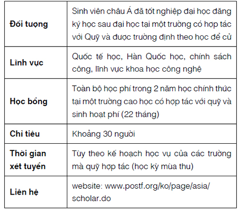

Gò đá Thái Dương là một nơi an toàn để ẩn nấp,” Da Xỉ Than nói với họ khi bà chui qua bụi dương xỉ.

Chân Sóc ngạc nhiên. “Nhưng chỗ đó không an toàn bằng chỗ này!” Gò đá Thái Dương là một bãi đá rộng gần biên giới bộ tộc Sông, trơ trọi với vài bụi cỏ nhỏ. Cảnh giác với Lông Bão chỉ đi sau họ vài bước chân, chân Sóc hạ giọng. “Còn bộ tộc Sông thì sao? Trước đây họ đã muốn chiếm đoạt chỗ đó làm lãnh thổ của họ - Sao Lửa không sợ họ tấn công bộ tộc nữa à?”
“Gần đây bộ tộc Sông đã không đe dọa chúng ta nữa,” Da Xỉ Than trả lời. “Gò đá Thái Dương ở xa bọn Hai Chân và không có quái vật phá hủy cây như trong lãnh thổ của chúng ta, và gầnn hơn với những con mồi còn sót lại trong rừng.”
Mặc dù khập khiễng, bà vẫn dẫn họ băng rừng nhanh chóng, nhưng chân Sóc để ý thấy hai bên mạn sườn của meo lang y gầy gò với đầy nổ lực. Cô liếc nhìn Vuốt Mâm Xôi. Anh cũng đang nhìn Da Xỉ Than, đôi mắt nheo lại suy tư.
“Chúng ta khỏe hơn nhiều so với bà ấy,” chân Sóc thì thầm với anh.
“Cuộc hành trình đã cho chúng ta thêm sức mạnh,” Vuốt Mâm Xôi bình luận.
Chân Sóc cảm thấy đau nhói, khó chịu cùng cảm giác tội lỗi khi chuyến hành trình dài và đầy khó khăn vẫn giữ họ an toàn với đầy đủ mồi tươi hơn tất thảy những con mèo ở lại. Mặt trời chìm dần vào bầu trời màu xanh, và một cơn gió lạnh làm xáo động tán cây trên đầu chúng, cuốn phăng cả chiếc lá cứng đầu nhất. Cô dừng lại, lắng nghe. Một vài loài chim líu lo trong lặng lẽ, nhưng chủ yếu cô chỉ nghe thấy tiếng quái vật gầm gừ, ồn ào như một con ong tức giận. Mùi hôi thối của chúng treo đầy trong không khí và bám vào bộ lông của cô, chân Sóc nhận ra khu rừng đã không còn mùi hương quen thuộc và nó không còn giống như một ngôi nhà nữa. Nó đã trở thành một nơi khác, một nơi mà không mèo nào có thể nhận ra. Không có chỗ cho mèo ở lại. Nếu mèo ở lại, quái vật cũng sẽ xé xác, hoặc mèo sẽ chết đói vì không có mồi. Lời tiên tri của Nửa Đêm thực sự đã đến.
Một phần lớn màu xám nhạt của gò đá Thái Dương đã hiện ra sau hàng cây, và chân Sóc nhận và có bóng dáng của nhiều mèo di chuyển trên đá.
Một tiếng ngao lao cô giật mình, và cô thấy bộ lông màu trắng cam nhánh lên dưới bụi cây. Một nhịp tim đập sau, Đuôi Nai và Lông Diều Hâu chui ra khỏi bụi cây trước mặt họ.
“Tôi nghĩ tôi có thể ngửi thấy một mùi lạ,” Đuôi Nai meo không kịp thở.
Chân Sóc nhìn chằm chằm vào hai chiến binh. Trông họ rối bù như Da Xỉ Than, và bên cạnh cô, mắt Vuốt Mâm Xôi mở to vì sốc khi mắt anh lướt qua cơ thể gầy gò của họ.
“Chúng tôi không nghĩ là hai mèo sẽ trở về,” Lông Diều Hâu meo.
“Tất nhiên là chúng tôi sẽ trở về!” chân Sóc phản đối.
“Mấy mèo đã ở đâu vậy?” Đuôi Nai hỏi.
“Một nơi rất xa,” Lông Bão thì thầm. “Xa hơn đoạn đường mà tất cả mèo trong rừng đã từng biết.”
Lông Diều Hâu trừng mắt nghi ngờ nhìn chiến binh bộ tộc Sông. “Cậu không về nhà của mình sao?”
“Tôi cần nói chuyện với Vằn Xám trước.”
Lông Diều Hâu nheo mắt.
“Để cậu ấy đi đi,” Da Xỉ Than khuyên. “Mấy đứa này có nhiều chuyện cần nói với chúng ta.”
Ria Lông Diều Hâu giật giật, nhưng anh cúi đầu và quay sang dẫn đường đưa họ về phía những tảng đá.
“Đi thôi,” Đuôi Nai meo, bước theo sau Lông Diều Hâu. “Những mèo khác cũng đang muốn nhìn thấy mấy mèo.”
Chân Sóc bước đi bên cạnh cô, cố gắng bỏ qua cơn đói cồn cào trong bụng. Dường như cuộc hành trình nghe Nửa Đêm nói đã biến mất, và họ đã trở về quá trễ để có thể giúp đỡ bộ tộc. Cô cầu nguyện rằng dấu hiệu từ chiến binh nằm xuống đủ để cứu họ. Liếc nhìn Đuôi Nai, cô thấy đuôi của chiến binh màu khoang rũ xuống và ánh mặt nhìn xuống mặt đất mệt mỏi.
“Da Xỉ Than đã nói với em về chân Lá,” chân Sóc thì thầm.
“Chị không thể làm gì để cứu cô ấy,” Đuôi Nai trả lời buồn bã. “Chị không biết họ đã đưa nó đi đâu. Chị muốn đi tìm, nhưng chúng ta đã rời khỏi trại vài ngày trước, và chẳng có gì thay đổi cả.” Cô dừng lại và nhìn chân Sóc, đôi mắt nhấp nháy với chút hy vọng. “Em có thấy nó trong chuyến hành trình của em không? Em có biết nó đang ở đâu không?”
Chân Sóc lắc đầu. “Không, tụi em không thấy chị ấy.”
Mùi quen thuộc của bộ tộc Sấm tràn đầy trong khí. Chân Sóc muốn nhanh chóng tiến về phía trước để nhận sự chào đón của đồng tộc, nhưng bản năng cảnh báo cô rằng phải tiếp cận họ một cách thận trọng. Cô đứng chờ trong chốc lát, hy vọng rằng trái tim không phải quặn thắt trước những lời buộc tội của mỗi mèo trên gò đá Thái Dương.
Dốc đá trơn, rải rác ở xung quanh rồi cao dần lên phía trên. Khu rừng giáp ở một bên, và phía xa hơn, nơi dốc đá giảm mạnh, chân Sóc có thể thấy một vài nhánh cây, trôi theo dòng sông từ điểm Bốn Cây – hoặc nơi nào đó đã từng là điểm Bốn Cây. Mặt đá lạnh, xáo trộn bởi những con gió trong mùa lá trụi, là một nơi lạnh lẽo cho cả bộ tộc. Chân Sóc nhìn thấy bàn chân Đuôi Nai có những vệt máu khô bám quanh móng vuốt. Cô nhớ lại bàn chân mình cũng đã từng bị rỉ máu như thế khi những hòn đá sắc nhọn đâm vào bàn chân của cô lúc ở với bộ lạc Nước Đổ.
Không có trảng trống để bầy mèo tụ tập như khi ở trong khe núi. Thay vào đó, bầy mèo ngồi lộn xộn với nhau theo từng nhóm nhỏ; chân Sóc phát hiện ra bộ lông màu nâu của mèo bảo trợ, Da Bụi, ấn nấp dưới một hòn đá nhô ra, với Lông Chuột ở bên cạnh ông. Trông ông gầy hơn nhiều so với khi cô rời đi, xương vai của ông nhô ra dưới bộ lông. Lông Tuyết và Đuôi Đốm Xám, hai mèo già của bộ tộc, cúi đầu cạnh nhau trong cái rãnh sâu. Cho dù ở trong bóng tối, chân Sóc cũng có thể nhìn ra bộ lông của họ rối bù đần độn, lốm đốm với rêu và bùn khô. Ở phía xa hơn, thấy thoáng bóng dáng bạn đời của Da Bụi, Mây Dương Xỉ, đang cúi người cạnh hai đứa trẻ của mình.
“Sẽ an toàn hơn khi ở đó,” Da Xỉ Than giải thích, nhìn theo ánh mắt của chân Sóc. “Nhưng những nữ miu vẫn cảm thấy không an toàn bằng hàng rào gai trong nhà trẻ. Lính nhỏ đã làm hang của họ ở hốc đá phía dưới,” bà nói tiếp, nâng mũi lên để chỉ vào bãi đá. Chân Sóc nhận ra bộ lông màu nâu của chân Chuột Chù, một trong những đứa con đầu tiên của Mây Dương Xỉ, đang run lên vì lạnh.
Chân Sóc liếc nhìn Vuốt Mâm Xôi, mèo gật nhẹ đầu, nhưng ẩn sâu trong đôi mắt là sự lo lắng, và vai của anh căng thẳng khi anh bắt đầu leo lên dốc. Ái ngại, cô theo sau anh. Khi cô tới chỗ Mây Dương Xỉ, nữ miu nhìn cô, và đôi mắt màu xanh của bà tối sầm lại tức giận.
Chân Sóc nao núng. Bộ tộc đang đổ lỗi cho chúng về những việc đã xảy ra?
Một vài mèo khác cũng đã phát hiện ra họ. Vuốt Gai nhấc mình ra khỏi cái rãnh trên đỉnh dốc, tai ép xuống; với một tiếng rít đe dọa, Ria Mưa bước xuống theo khe nứt của tảng đá. Đôi mắt của chiến binh màu xáu đen nháng lên, nhưng không có bất kì sự ấm áp hay vẻ chào mừng cho những mèo vừa trở về.
Lông Bão liếc quanh bãi đá để tìm Vằn Xám. Chân Sóc nhìn theo ánh mắt anh, nhưng không có dấu hiệu của thủ lĩnh trợ tá bộ tộc Sấm, hay của bố cô ở đây. Cô đã chiến đấu với bản thân để không cong đuôi chạy trốn vào rừng, thậm chí là trở lại ngọn núi. Cô đau khổ trao đổi ánh mắt với Vuốt Mâm Xôi. “Họ không muốn chúng ta ở đây,” cô thì thầm.
“Họ sẽ hiểu sau khi chúng ta giải thích,” anh hứa. Chân Sóc hy vọng là anh nói đúng.
Tiếng bước chân ở phía sau làm chúng giật mình. Một chiến binh màu xám, Lông Tần Bì, đứng sững trước mặt cô. Cô tìm trong mắt của anh ấy vẻ giận dữ, nhưng chỉ có sự ngạc nhiên.
“Em đã trở về!” Đuôi anh nhổng cao và anh tới gần, cọ mõm vào mũi cô để chào mừng.
Chân Sóc cảm thấy nhẹ nhõm. Cuối cùng cũng có một mèo chào mừng họ trở về.
Chân Chuột Chù vùng dậy ra khỏi hốc trống và chạy băng qua đá về phía họ, với chân Trắng theo sát phía sau.
“Chân Chuột Chù!” Chân Sóc ré lên, cố gắng để giọng nói của mình không vượt xa hơn Dãy Núi, và không kéo dài quá hai bình minh. “Việc huấn luyện thế nào rồi?”
“Chúng tôi rất chăm chỉ,” chân Chuột Chù trả lời trong hơi thở khi tiếp cận cô.
Chân Trắng dừng lại bên cạnh cậu ấy. “Chúng tôi đã có thể dự cuộc Tụ Họp đầu tiên nếu Hai Chân không phá hủy điểm Bốn—”
Lông Tần Bì nháng cho cô mèo màu trắng tia nhìn cảnh cáo. “Họ chưa nghe chuyện đó đâu,” anh rít.
“Được rồi,” Vuốt Mâm Xôi nói. “Chúng tôi đã biết về điểm Bốn Cây. Bàn Chân Nhện đã nói với chúng tôi.”
“Bàn Chân Nhện?” Lông Tần Bì nheo mắt. “Anh đã đến lãnh thổ bộ tộc Gió à?”
“Chúng tôi phải băng qua đó khi trở về,” chân Sóc giải thích.
“Trở về từ nơi nào?” Chân Chuột Chù meo, nhưng chân Sóc không trả lời. Cô thấy Da Bụi và Lông Chuột xuất hiện từ cái hang tạm thời của họ. Lông Bồ Hóng cũng bò ra từ một hốc trống thấp bên cạnh họ. Bây giờ, tất cả các chiến binh đã di chuyển tới gần họ, như những bóng ma vụt ra từ bóng tối. Chân Sóc nén một cơn rùng mình khi họ nhảy xuống tảng đá. Cô lùi lại, nép sát vào lông Vuốt Mâm Xôi và cảm nhận Lông Bão cũng đang nép bên hông minh, cảnh giác. Nó nhắc cho cô nhớ về lần đầu đối mặt bầy mèo đến từ bộ lạc Thác Đổ. Nỗi sợ hãi cào xé trái tim chân Sóc khi cô nhận ra không chỉ có khu rừng thay đổi. Cả bộ tộc của cô cũng đã thay đổi.
“Tóm lại là tụi bay đã đi đâu?” một giọng gầm gừ đặc biệt cất lên. Lông Tuyết đã trèo ra khỏi hang mèo già. Bà mèo già đã rũ bớt những vụn đất ra khỏi bộ lông trắng, nhưng chân Sóc vẫn do dự trước ánh mắt lạnh như băng của bà.
“Chúng tôi đã thực hiện một chuyến hành trình dài,” Vuốt Mâm Xôi bắt đầu.
“Chẳng giống gì cả!” Mây Dương Xỉ rời khỏi mấy đứa nhỏ và tiến về phía trước. “Trông cậu còn được ăn đầy đủ hơn cả chúng tôi.”
Chân Sóc cố gắng để không cảm thấy tội lỗi về số mồi tươi cô đã bắt được trong cuộc hành trình. “Mây Dương Xỉ, con đã nghe về bé Đường Tùng, và con xin lỗi…”
Mây Dương Xỉ không có tâm trạng để lắng nghe. “Làm thế nào mà chúng tôi có thể biết cô cậu không rời khỏi bộ tộc vì nỗi sợ phải đối mặt với cơn đói của mùa lá trụi?” cô rít lên
.
Chân Sóc nghe thấy Lông Chuột và Vuốt Gai meo lên tán đồng, nhưng lúc này sự tức giận đã vượt qua nỗi sợ hãi. “Làm thế nào mà cô có thể nghĩ như vậy chứ?” cô cãi, lông dựng lên tua tủa.
“Đúng vậy đấy, lòng trung thành của cô rõ ràng nằm ở bên ngoài bộ tộc!” Lông Chuột gầm gừ, nhìn chằm chằm vào Lông Bão.
“Lòng trung thành của chúng tôi luôn dành cho bộ tộc,” Vuốt Mâm Xôi trả lời bình thản. “Đó là lí do tại sao chúng tôi phải ra đi.”
“Thế cậu đang làm gì với một chiến binh bộ tộc Sông vậy?” Da Bụi hỏi.
“Anh ấy có một vài tin cho Vằn Xám,” Vuốt Mâm Xôi meo. “Anh ấy sẽ rời khỏi đây ngay khi nói chuyện với bố xong.”
“Bây giờ anh ta phải rời đi,” Lông Chuột rít lên, bước một chân về phía trước.
Da Xỉ Than bước đến chắn giữa Lông Chuột và Vuốt Mâm Xôi. “Hãy nói cho chúng tôi biết về lời tiên tri của bộ tộc Sao đi,” cô nhắc.
“Một lời tiên tri? Bộ tộc Sao đã nói gì?” đồng tộc của chân Sóc nhìn chằm chằm vào cô và Vuốt Mâm Xôi như một con cáo háu đói.
“Chúng tôi phải nói chuyện với Sao Lửa trước,” chân Sóc bình tĩnh meo.
“Sao Lửa đang ở đâu?” Vuốt Mâm Xôi hỏi.
“Ông ấy đi săn rồi.” Đó là giọng của Bão Cát.
Chân Sóc nín thở chờ đợi, nửa vui mừng, nửa lo lắng khi bà mèo màu cam bước tới chỗ con gái của bà và dừng lại cách một cái đuôi, nhìn chằm chằm vào cô.
“Tụi con đã trở về.” Chân Sóc tìm kiếm biểu hiện chào đón trên khuôn mặt của mẹ.
“Con đã về,” Bão Cát lặp lại lo lắng.
“Chúng tôi phải đi. Bộ tộc Sao không cho chúng tôi lựa chọn nào khác.” Vuốt Mâm Xôi bảo vệ chân Sóc, và cô biết ơn với hơi ấm của anh, khi anh nép sát hông vào. Cô muốn thừa nhận với mẹ là bộ tộc Sao không gửi giấc mơ cho cô, và cô đã khăng khăng đi cùng Vuốt Mâm Xôi mặc cho anh miễn cưỡng đưa cô ra khỏi bộ tộc, nhưng nỗi sợ hãi làm từ ngữ không thể thoát ra.
Ria của Bão Cát run lên khi bà chạy về phía trước. “Một trong hai đứa con của tôi đã trở về!” bà meo, cọ vào má chân Sóc với tình yêu mãnh liệt.
Cô cảm thấy nhẹ nhõm. “Con xin lỗi vì đã đi mà không nói gì với mẹ, nhưng—”
“Con đã về,” Bão Cát meo. “Đây là những gì mẹ quan tâm.” Hơi thở ấm áp của bà phả vào mõm chân Lá. “Mẹ đã tự hỏi mình phải làm thế nào nếu không được gặp lại con nữa.”
Chân Sóc nghe thấy tiếng rù rừ từ trong cổ họng của mẹ. Nó nhắc cho cô nhớ lại khi cô còn là một đứa trẻ, cuộn mình trong nhà trẻ, với chị gái ở bên cạnh. Ôi, chân Lá! Chị đang ở đâu?
Tiếng meo sâu ngắt ngang họ. “Có vẻ như lính nhỏ của tôi đã trở lại,” Da Bụi bình luận. Trông ông cũng hốc hác như những chiến binh khác, đôi mắt ông tràn đầy ấm áp khi đến bên cô.
“Cho dù con ở đâu, con cũng đã được ăn đầy đủ,” ông nói, đôi mắt mở to khi nhìn cơ bắp mạnh mẽ và bộ lông óng mượt của chân Sóc.
Chóp đuôi Vuốt Mâm Xôi giật giật. “Chúng tôi rất may mắn. Có đầy mồi ở những nơi chúng tôi đã đi qua.”
“Bây giờ chúng ta cần mồi tươi hơn bất kì thứ gì,” Da Bụi meo. “Nếu cậu tìm được nơi có đầy mồi, bộ tộc nên biết nơi đó.”
“Ở xa lắm,” Vuốt Mâm Xôi cảnh báo.
Da Bụi giật giật tai. “Và số mồi đó không dành cho chúng ta,” ông meo. “Nhà của chúng ta ở đây. Chúng ta sẽ không cho phép Hai Chân cùng quái vật của họ đuổi chúng ta đi.” Một tiếng thách thức mờ nhạt tán đồng từ những con mèo khác.
Chân Sóc nhìn vào họ trong hoảng loạn. Nhưng họ phải rời đi! Nửa Đêm đã nói các bộ tộc phải đi tìm một ngôi nhà mới – một chiến binh nằm xuống sẽ cho họ thấy con đường cần phải đi – và chân Sóc đã cho rằng thực trạng bị đuổi ra khỏi trại của bộ tộc Sấm sẽ giúp họ thuyết phục bầy mèo dễ dàng hơn.
Sau đó cô nhìn thấy một bộ lông màu lửa trên đỉnh đá, in bóng trên nền trời màu hồng. Mặc dù bóng tối đã che lấp màu sắc chính xác của bộ lông, nhưng bờ vai mạnh mẽ và cái đuôi dài nhổng cao không thể lầm lẫn vào đâu được.
“Sao Lửa!” chân Sóc gọi.
“Chân Sóc!” Sao Lửa dợm bước xuống, sau đó lùi lại. Ria của ông giật giật trong một nhịp tim đập trước khi nhảy xuống và liếm nhanh vào tai chân Sóc. Cô nhắm mắt lại và rù rừ, trong phút chốc quên đi nỗi kinh hoàng đang ập xuống khu rừng. Cô đang ở nhà, và đây là điều quan trọng nhất.
Sao Lửa bước lùi lại. “Con đã ở đâu vậy?” ông hỏi.
“Bọn con có rất nhiều chuyện phải nói với bố,” cô nhanh chóng trả lời.
“Bọn con?” Sao lửa lặp lại. “Vuốt Mâm Xôi đã đi cùng con à?”
“Phải, tôi ở đây.” Vuốt Mâm Xôi đẩy mình ra khỏi bầy mèo và đến đứng cạnh chân Sóc, cúi đầu đầy tôn trọng. Phần còn lại của bộ tộc chờ đợi, ánh mắt họ lấp lánh trong chập chờn, và thậm từng cơn gió thổi cũng nghe như khu rừng đang nín thở.
“Mừng trở về nhà, Vuốt Mâm Xôi.” Chân Sóc nghĩ rằng cô đã nhìn thấy sự thận trong đôi mắt của bố, cảm nhận một cơn ớn lạnh chạy dọc xương sống.
Một bộ lông màu xám lọt vào tầm mắt của cô, và không có nhiều hơn một cái bóng lao xuống dốc. Đó là Vằn Xám. Ông đến đứng cạnh Sao Lửa. “Lửa và Cọp đã trở về!” ông rù rừ.
“Lửa và Cọp?” Chân Sóc lặp lại. Vằn Xám đang nói gì vậy?
“Chúng ta sẽ nói về chuyện đó sau,” Sao Lửa thì thầm, liếc nhanh bầy mèo bộ tộc đang chờ đợi.
“Ồ, tất nhiên rồi,” Vằn Xám meo, gục đầu xuống. Sau đó mắt ông bừng sáng một lần nữa. “Hai đứa con của ta cũng đi cùng với mấy đứa phải không?” Ông liếc nhìn từ chân Sóc đến Vuốt Mâm Xôi đầy hy vọng.
Chân Sóc gật đầu. “Chúng tôi đã đi cùng với họ,” cô giải thích. “Lông Bão—”
“Con ở đây.” Lông Bão lách mình ra khỏi bầy mèo.
Tai của Vằn Xám giật giật ngạc nhiên và vui sướng. “Lông Bão!” Ông nhanh chóng bước tới chào mừng đứa con trai của mình, lông dựng lên. “Con vẫn an toàn!” Ông nhìn trở lại chân Sóc và Vuốt Mâm Xôi. “Tất cả mấy đứa đều an toàn. Ta không thể tin nỗi.”
Trái tim chân Sóc bỗng quặn thắt.
“Đuôi Phi Điểu đâu?” Vằn Xám nhìn qua vai Lông Bão như thể nhờ đợi một cô mèo có bộ lông màu xám bước lên tảng đá.
Chân Sóc nhìn chằm chằm xuống bàn chân. Thương cảm cho Lông Bão. Anh ấy đã đưa về tin tồi tệ nhất, cho bộ tộc Sông cũng như bộ tộc Sấm.
“Con bé đâu?” Vằn Xám hỏi, có vẻ bối rối.
“Nó không đi cùng tụi con,” Lông Bão trả lời. Nhìn thẳng vào mắt bố mình. “Con bé đã chết trên đường đi.”
Vằn Xám nhìn trân trân vào anh trong sự hoài nghi.
Sao Lửa nâng cằm lên. “Vằn Xám và Lông Bão cần được chia sẽ nỗi đau cùng nhau,” ông meo với bộ tộc.
Chân Sóc cảm thấy biết ơn với bố. Ít nhất họ cũng có thể giải thích rõ ràng mọi thứ với Vằn Xám mà không phải chịu sự giám sát của mèo khác. Khi Sao Lửa hướng dẫn bộ tộc ngồi quanh con dốc, cô nép sát vào Vuốt Mâm Xôi.
Vằn Xám nhìn chằm chằm vào tảng đá ở dưới chân như thể nó sẽ toác ra và gặm lấy ông.
“Bọn con không thể cứu được con bé,” Lông Bão nói. Anh chạm mũi vào vai bố.
Vằn Xám lắc đầu hướng về phía Vuốt Mâm Xôi. “Cậu không nên đưa con bé đi!” Đôi mắt ông căm phẫn đầy tức giận.
Chân Sóc giật giật đuôi. “Đó không phải là lỗi của anh ấy! Bộ tộc Sao đã chọn Đuôi Phi Điểu cho chuyến đi, Vuốt Mâm Xôi không chọn!”
Vằn Xám nhắm mắt lại. Vai rũ xuống cho đến khi trở lại kích thước bình thường. “Ta xin lỗi,” ông thì thầm. “Thật không công bằng. Con bé quá giống Suối Bạc...”
Khi giọng nói của ông kéo dài, Lông Bão lại đặt mõm lên hông Vằn Xám. “Đuôi Phi Điểu đã chết một cách dũng cảm và cao quý, xứng đáng với những chiến binh vĩ đại nhất,” anh nói với ông. “Bộ tộc Sao đã chọn con bé cho chuyến đi, và sau đó bộ lạc Thác Đổ cũng chọn con bé cho lời tiên tri của họ. Bố nên tự hào về nó. Con bé không chỉ cứu bộ lạc, con bé đã cứu tất cả chúng con.”
“Bộ lạc?” Vằn Xám lặp lại.
Chân Sóc có thể nghe thấy những con mèo khác đang hướng về phía xa của con dốc. Tiếng thì thầm của họ càng lúc càng to dần lên đến khi Sao Lửa ra lệnh cho họ im lặng, giọng ông vang vọng trong đá. “Ta biết tất cả các bạn đều đang muốn nghe xem Vuốt Mâm Xôi và chân Sóc đã ở đâu,” ông meo. “Hãy để chúng tôi nói chuyện trước; sau đó tôi hứa tôi sẽ chia sẻ mọi thứ cho các bạn.”
“Tôi muốn nghe lính nhỏ của tôi nói lí do tại sao nó bỏ đi,” Da Bụi gầm gừ.
“Và lời tiên tri mà họ đã nhắc đến là thế nào?” Lông Bão đề nghị. “Chúng tôi phải biết tất cả!”
Vuốt Mâm Xôi đặt mõm lên tai chân Sóc. “Có vẻ tốt nhất là chúng ta nên chia sẻ hết với họ.” Anh nhìn Lông Bão. “Anh đến đây không?”
“Cảm ơn, Vuốt Mâm Xôi,” Lông Bão trả lời, “nhưng tôi nên về nhà.” Anh nhìn Vằn Xám. “Họ sẽ nói cho bố biết tất cả mọi chuyện, nhưng con muốn bố biết rằng bố rất tự hào về Đuôi Phi Điểu,” anh nói. “Nó đã cứu sống tất cả chúng ta.”
Vằn Xám chớp mắt, không trả lời.
Lông Bão quay sang chân Sóc và Vuốt Mâm Xôi. “Tôi biết mọi chuyện sẽ rất khó khăn,” anh meo, “nhưng chúng ta phải nói tất cả những gì chúng ta biết. Hãy nhớ tất cả những gì Nửa Đêm đã nói. Chúng ta phải làm mọi thứ vì cả bốn bộ tộc.”
Vuốt Mâm Xôi gật đầu kính cẩn. Chân Sóc hướng cơ thể về phía trước để áp má mình vào má Lông Bão. “Gặp anh vào ngay mai ở điểm Bốn Cây,” cô thì thầm. Bàn chân cô run rẩy cùng nỗi đau khi phải nói lời tạm biết với một trong những mèo mà cô thân thiết nhất. Hơn một mùa trăng cô đã không nghĩ anh ấy đến từ bộ tộc Sông và cô đến từ bộ tộc Sấm – họ như sống chung dưới một bộ tộc, cố gắng kết thúc chuyến hành trình và cứu cả bầy mèo trong khu rừng.
Khi Lông Bão lao xuống dốc, chân Sóc thấy Lông Chuột và Vuốt Gai nhìn cô như vẻ trách móc. Cô biết tình cảm với chiến binh bộ tộc Sông đã khiến cho họ thấy cô bất trung đến thế nào, nhưng cô quá buồn và mệt để có thể giải thích hết cuộc hành trình khó khăn của cả sáu mèo đến nơi mặt trời chìm, rồi sau đó lại thực hiện chuyến đi trở về nhà.
“Được rồi,” Sao Lửa meo. “Tất cả các chiến binh sẽ cùng nghe chân Sóc và Vuốt Mâm Xôi nói. Và cả cô nữa, Da Xỉ Than.” Ông ra hiẹu bằng mũi để chỉ cho chân Sóc đến nơi Da Bụi và Lông Chuột trú ẩn. “Chúng ta sẽ gặp nhau ở đó.”
Khịt mũi, Lông Chuột quay lại và bắt đầu leo lên dốc. Vằn Xám cùng Da Bụi theo sau cô ấy. Khi Sao Lửa, Da Xỉ Than và Bão Cát đi sau họ, chân Sóc vẫn đứng chờ trong chốc lát, để cho những cơn gió lạnh làm rối bộ lông mình. Cô không quan tâm xem gió lạnh đến thế nào – bằng cách nào đó, cô muốn mình lạnh, lạnh hơn nữa để chia sẻ những khổ đau với đồng tộc. Có lẽ không cần đến sức mạnh của gió để cào xé bộ lông rối bù của họ.
Bất ngờ cô nghe thấy tiếng thét lên của Vuốt Gai. Cô quay lại, cảnh giác và nhìn thấy Lông Bão đứng dưới chân dốc với hai con cá ở trong miệng.
“Chuyện gì đây?” Vuốt Gai quát. “Bộ tộc của ngươi không muốn ngươi quay về à?”
Chiến binh bộ tộc Sông thả cá xuống chân trước. “Tôi mang một món quà từ bộ tộc Sông.”
“Chúng tao không cần quà của ngươi!” Lông Tuyết quát.
Có tiếng bước chân nhẹ nhàng phía sau chân Sóc, và Sao Lửa nói. “Đây là thiện chí, Lông Tuyết à.” Không có chút cảnh giác nào trong giọng nói của ông. “Cảm ơn, Lông Bão.”
Lông Bão không trả lời; anh chỉ liếc nhìn tộc trưởng bộ tộc Sấm với đôi mắt u uất những nỗi buồn. Ánh mắt anh dừng một lúc ở chân Sóc; sau đó anh cúi đầu xuống và biến mất vào bụi lau sậy dẫn xuống mặt nước, để lại cá ở phía sau.
Bụng chân Sóc rộn rào vì đói. Cô đã không ăn kể từ khi họ rời khỏi lãnh thổ của Hai Chân ở phía xa thảo nguyên.
“Con phải đợi tới lần sau và thử xem có thể tự mình bắt một hay hai con chuột không,” Sao Lửa meo, nghe tiếng bụng cô phàn nàn. “Chúng ta phải nhường thức ăn cho Mây Phi Điểu và mèo già trước. Bây giờ con có thể đói nhưng bộ tộc còn đói hơn con.”
Chân Sóc gật đầu, cố gắng kiềm chế cơn đói. Cô đủ khỏe để tự đi săn khi cảm thấy đói, và chia sẻ nó với bạn bè của mình.
Sao Lửa gọi Vuốt Gai. “Chia cá cho Mây Dương Xỉ và mèo già,” trước khi ông quay lại tiếp tục bước.
Khi chân Sóc leo lên mặt đá khô khốc, cô thấy nó xa hơn nhiều so với tưởng tượng. Mặt đá màu xám mịn bảo vệ hang động, một cơn gió lạnh xoáy vào hốc trống, khuấy động mùi của nhiều mèo. Trái tim cô đau nhói khi nhớ lại khu trại thoải mái ngày trước, và cô nhắm mắt lại, ước gì khi mở mắt ra lại được nhìn thấy chi chít những nhánh cây mâm xôi đầy gai của hang lính nhỏ thay vì hang đá lạnh lẽo này.
“Tất cả các chiến binh đều đã ở trong hang này,” Da Bụi thì thầm vào tai cô, như thể ông đoán được cô đang nghĩ gì. “Không có nhiều chỗ ngủ ở đây.”
Chân Sóc mở mắt ra lại và nhìn xung quanh những hốc trốc. Hai Chân đã đuổi bộ tộc đến đây! Ít nhất cô có thể đưa bộ tộc đến một nơi an toàn, nơi có nhiều chỗ ngủ hơn và đủ mồi tươi cho tất cả.
“Ít nhất đây là một nơi trú ẩn,” Bão Cát meo, mặc dù bộ lông của bà xù lên vì cái lạnh đã thấm tới tận tủy.
Sao Lửa ngồi gần cái hốc rỗng phía sau. Bão Cát và Vằn Xám ngồi ở hai bên. Thủ lĩnh trợ tá của bộ tộc Sấm có nỗi khổ của riêng mình; Da Xỉ Than ngồi bên cạnh ông ấy, mây mù che mờ đôi mắt bà.
“Bây giờ,” Sao Lửa bắt đầu, cuộn đuôi vòng quanh chân. “Nói cho ta biết mọi thứ từ khi bắt đầu.”
Chân Sóc cảm thấy câu hỏi trong mắt của những mèo đồng tộc đang đốt cháy bộ lông của cô. Vuốt Mâm Xôi quét đuôi dọc bên hông cô trước khi đối mặt với Sao Lửa.
“Bộ tộc Sao đã đến với tôi trong giấc mơ và bảo tôi đến nơi mặt trời chìm,” anh giải thích. “Tôi – đầu tiên tôi không biết mình có nên tin vào điều đó không, nhưng bộ tộc Sao đã gửi những giấc mơ giống hệt cho một mèo đến từ mỗi bộ tộc khác: chân Chim của bộ tộc Gió, Đuôi Phi Điểu của bộ tộc Sông, và Da Hung của bộ tộc Bóng Tối.”
Sao Lửa gật đầu ở bên cạnh khi Vuốt Mâm Xôi tiếp tục. “Chúng tôi đã cùng nhau thực hiện chuyến đi và nghe những gì Nửa Đêm nói với chúng tôi.”
“Nửa Đêm đã nói với cậu cái gì?” Da Bụi lặp lại, sững sốt.
Ánh mắt của Sao Lửa dính chặt chân Sóc, và cô buộc mình phải đối mặt. “Con cũng có giấc mơ đó à?” ông hỏi.
“Không,” cô thừa nhận. “Nhưng con phải… con muốn đi…” Cô tìm từ ngữ nào đó để giải thích lí do tại sao cô lại đi, nhưng cô không muốn nói cho Sao Lửa biết rằng cô chỉ cố gắng thoát ra những cuộc tranh cãi với bố. Cô cúi đầu, im lặng.
“Tôi rất vui vì cô ấy đã đi cùng chúng tôi!” Vuốt Mâm Xôi lên tiếng. “Cô ấy có tất cả những kĩ năng của một chiến binh!”
Sau khi nhìn anh bằng cả chín mạng sống, Sao Lửa gật đầu. “Tiếp đi, Vuốt Mâm Xôi.”
“Chúng tôi đã hướng đến nơi mặt trời chìm, với sự giúp đỡ của chân Quạ. Ông ấy đã nghe về nơi đó từ những mèo phản loạn khác.”
“Nó rất xa,” chân Sóc tiếp. “Bọn con nghĩ phải mất rất nhiều thời gian.”
“Chân Quạ đã nói cho chúng tôi hướng đi đúng, nhưng chúng tôi không biết có gì đang chờ đợi mình ở phía trước,” Vuốt Mâm Xôi giải thích. “Nhưng bộ tộc Sao đã cử chúng tôi đi, vì vậy chúng tôi đã cố gắng đi.”
“Mặc dù tụi con không biết tại sao họ lại chỉ định tụi con,” chân Sóc thêm.
Vuốt Mâm XÔi uốn cong vuốt, tạo ra chút âm thanh nhỏ trên nền đất cứng. “Chúng tôi chỉ cố gắng làm tròn bổn phận của mình với bộ tộc,” anh thì thầm.
“Một gã cô đơn đã giúp chúng con đi qua khu vực Hai Chân,” chân Sóc tiếp, nhớ lại cảm giác thất thường của Purdy khi ông ấy chỉ đường.
“Và cuối cùng chúng tôi cũng đến được nơi mặt trời chìm. Không giống với bất kì nơi nào trước đây,” Vuốt Mâm Xôi meo. “Vách đá cao với những hang động ở phía dưới, và nước màu xanh đậm hơn nhiều so với những gì mà bất kì con mèo nào nhìn thấy, không ngừng dâng lên rồi hạ xuống. Lần đầu tiên nước làm chúng tôi sợ đến vậy, nó quá rộng lớn.”
“Sau đó Vuốt Mâm Xôi rơi xuống. Con cố gắng cứu anh ấy, nhưng lại phát hiện ra mình đang ở trong một hang động, và sau đó tụi con tìm thấy Nửa Đêm.” Những từ ngữ của chân Sóc nói ra một cách rời rạc.
“Ý con là sao, con ‘tìm thấy nửa đêm’?” Da Bụi thắc mắc.
Vuốt Mâm Xôi rê rê bàn chân. “Nửa Đêm là một con lửng,” cuối cùng anh meo. “Bộ tộc Sao muốn chúng tôi tìm thấy bà ấy vì bà ấy có thể cho chúng tôi biết bộ tộc Sao muốn nói điều gì.”
“Và bà ấy đã nói gì?” Tai Sao Lửa giật giật khi ông nói.
“Rằng Hai Chân sẽ phá hủy khu rừng và để cho chúng ta chết đói,” chân Sóc meo, trái tim quặn thắt lại như lần đầu tiên cô nghe Nửa Đêm cảnh báo.
“Bà ấy bảo chúng ta tôi phải dẫn mọi mèo ra khỏi khu rừng để đi tìm một ngôi nhà mới,” Vuốt Mâm Xôi meo.
“Nhà mới?” Bão Cát nhìn chằm chằm trong sự hoài nghi.
“Vì vậy chúng ta phải rời khỏi khu rừng chỉ vì một con lửng chẳng bao giờ có những suy nghĩ tốt đẹp?” Da Bụi meo.
Chân Sóc nhắm mắt. Bộ tộc Sấm đang bỏ qua những lời cảnh báo của Nửa Đêm? Cuộc hành trình của họ và cái chết của Đuôi Phi Điểu là vô nghĩa?
“Và bà ấy đã nói chúng ta nên đi tìm chỗ đó như thế nào?” Vằn Xám đứng dậy và nghiêng mình, chóp đuôi giật giật.
Từng lời nói của Nửa Đêm lặp lại trong suy nghĩ của chân Sóc một lần nữa và cô thấy mình lặp lại chúng một cách rõ ràng, thành tiếng. “‘Sẽ chẳng có một hướng dẫn nào cả’ – đó là những gì cô ấy nói. ‘Lúc trở về, hãy đứng trên Tảng Đá Lớn khi dải Thiên Hà ở trên đầu. Một chiến binh ngã xuống sẽ cho thấy hướng đi đúng.”
“Con đã đến Tảng Đá Lớn để tìm dấu hiệu này chưa?” Sao Lửa hỏi.
Vuốt Mâm Xôi lắc đầu. “Chúng tôi sẽ gặp nhau vào ngày mai với Da Hung, Lông Bão, và chân Chim. Chúng tôi sẽ đi cùng với tộc trưởng của mình, nếu như thuyết phục được họ đi cùng…”
“Ngài đi à?” Lông Chuột ép tai xuống.
“Không có gì giữ tôi ở lại cả,” Sao Lửa trả lời.
Da Bụi mở to mắt nhìn chằm chằm vào tộc trưởng. “Ngài không nghĩ là sẽ mang bộ tộc ra khỏi khu rừng, đúng không?”
“Phải, tôi không biết mình nên làm gì,” Sao Lửa thừa nhận. “Nhưng tôi không chắc bộ tộc có thể tồn tại được trong mùa lá trụi.” Ông bắt gặp ánh mắt của Da Bụi, và sau chốc lát ông nhìn vào mắt chân Sóc. “Tôi không thể để bộ tộc của mình bị hủy hoại nếu có thể làm điều gì đó để ngăn lại. Chúng ta không thể lờ đi một thông điệp, cho dù nó dẫn chúng ta đến đâu đi chăng nữa. Nó có thể là hy vọng duy nhất. Nếu có một tín hiệu, tôi muốn tự mình nhìn thấy tín hiệu đó.”
Ông đứng thẳng và nhìn vào Vuốt Mâm Xôi. “Ngày mai, tôi sẽ đi cùng với cậu đến điểm Bốn Cây.”